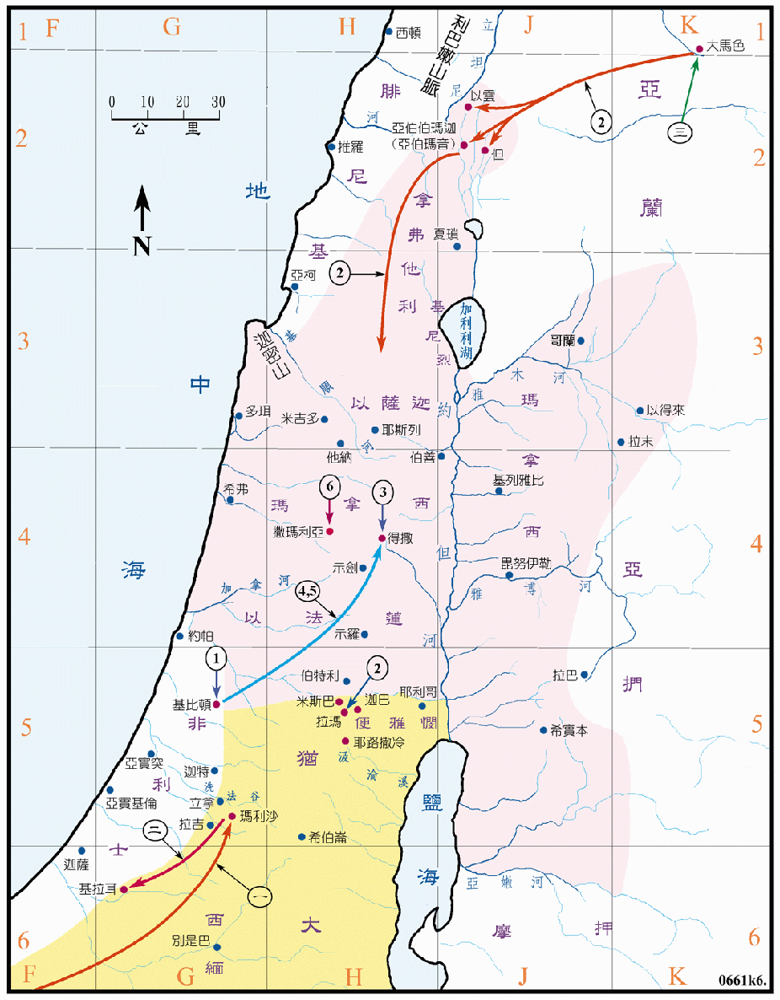

914～874BC

| 国 | 王 |
|---|---|
| 犹大国 | 亚撒 (犹王三 914～874BC) |
| 以色列国 | 拿答 (以王二 911～910BC) |
| 巴沙 (以王三 910～887BC) | |
| 以拉 (以王四 887～886BC) | |
| 心利 (以王五 886BC) | |
| 暗利 (以王六 886～875BC) |
行动线说明
犹大王亚撒
| 序号 | 圣经 | 说明 |
|---|---|---|
| 王下15:9-15，代下14:1-8 | 亚撒登基作犹大王，他行耶和华看为正的事，除去境内的邱坛和偶像，又建了几座坚固城，增强兵力，国中就太平了十年。 | |
| 一、 | 代下14:9-10 | 古实王谢拉攻击犹大，彼此在玛利沙的洗法谷摆阵。 |
| 二、 | 代下14:11-15 | 藉神的帮助，亚撒王大胜，直追到基拉耳，古实就不能再强盛。 |
| 代下15:8-19 | 亚撒再度在犹大、便雅悯、以法莲山地，除去可憎之物，重修耶和华的坛，就有许多的以色列人前来归降，南国太平直到亚撒卅五年。 | |
| 三、 | 王上15:16-21，代下16:1-5 | 亚撒和以色列王巴沙常常争战，亚撒王卅六年，以色列王巴沙上来修 拉玛， 阻止以色列人到犹大，亚撒王就以重金商请亚兰王便哈达相助，便哈达就攻破了以色列的北部，巴沙只得撤退。 |
| 四、 | 王上15:22，代下16:6 | 以色列人撤兵后，亚撒就 迦巴和米斯巴。 |
| 王上15:23-24，代下16:11-13 | 亚撒作犹大王四十一年去世前三年，因脚上有病，他的儿子约沙法接续他作王。 |
以色列王拿答
| 序号 | 圣经 | 说明 |
|---|---|---|
| 1 | 王上15:25-28 | 耶罗波安的儿子拿答登基作以色列王二年，当拿答去攻打非利士的基比顿时，巴沙杀了他篡了他的位。 |
以色列王巴沙
| 序号 | 圣经 | 说明 |
|---|---|---|
| 王上15:27-34 | 巴沙杀了拿答，篡位作以色列王廿四年。 | |
| 2 | 王上15:16-21，代下16:1-5 | 巴沙攻击犹大、在拉玛 城，但北部被亚兰人攻占，只得撤兵。 |
以色列王以拉
| 序号 | 圣经 | 说明 |
|---|---|---|
| 3 | 王上16:8-10 | 巴沙的儿子以拉接续作王两年，在得撒被心利所弑。 |
以色列王心利
| 序号 | 圣经 | 说明 |
|---|---|---|
| 4 | 王上16:9-20 | 心利篡了以拉的位，作王七天，就被自基比顿领兵回来的暗利所困，他烧了宫殿，并自焚而死。 |
以色列王暗利
| 序号 | 圣经 | 说明 |
|---|---|---|
| 5 | 王上16:16-23 | 以色列的元帅暗利，在基比顿攻打非利士时，闻心利篡了以拉王的位，众人就立他作以色列的王，并领兵回得撒，心利自焚后，暗利在得撒作王六年。 |
| 6 | 王上16:24-28 | 他建造撒玛利亚城作为新都，又作王六年，共作以色列王十二年，他的儿子亚哈接续他作王。 |
南国在亚撒王的统治下，逐渐地强盛起来，国内约太平了三十多年，但随后却被埃及和北国攻打，於是投靠亚兰。以大马色为首都的亚兰王国，因为先协助犹大，再压迫以色列而得以壮大强盛。他们曾被大卫和所罗门征服，但在王国分裂之后，使他们有机可趁，再度独立，而且成为北国，甚至南国的主要祸患。北国在北方受到亚兰之威胁，就往南攻打犹大国和非利士，但均未能全功。而在国内则有两三次的篡位，从耶罗波安王朝，经巴沙王朝，再换成暗利王朝，国都也从得撒迁到撒玛利亚，所以政局很不稳定。